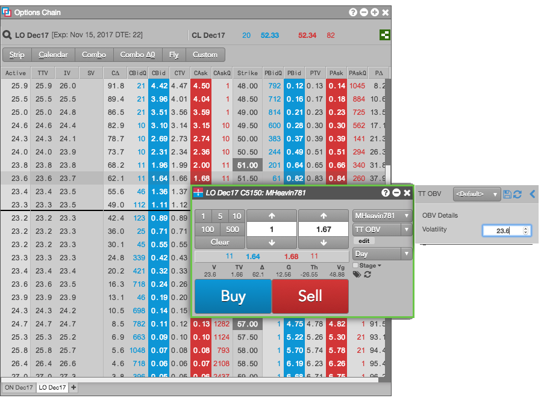

The TT OBV (Order by Volatility) lets you enter an order for an options contract by entering a desired volatility. The TT OBV places the order at the price level that corresponds to the desired volatility. As moves in the underlying contract impact the volatility at each price level, the TT OBV will continuously reprice the order to maintain the desired volatility.
For example, suppose you want to buy a Call options contract, such as LO Dec17 C5150, at 23.6 vol. You would specify the following parameter value:

The following parameter is required:
For more information about using TT OBV orders, see Entering a TT OBV order.